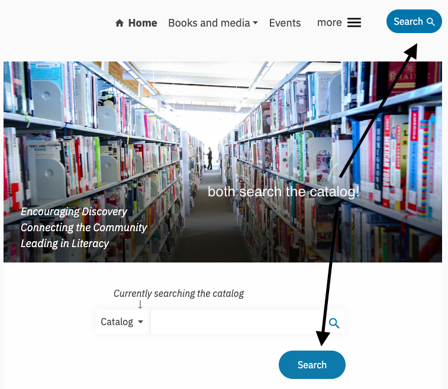
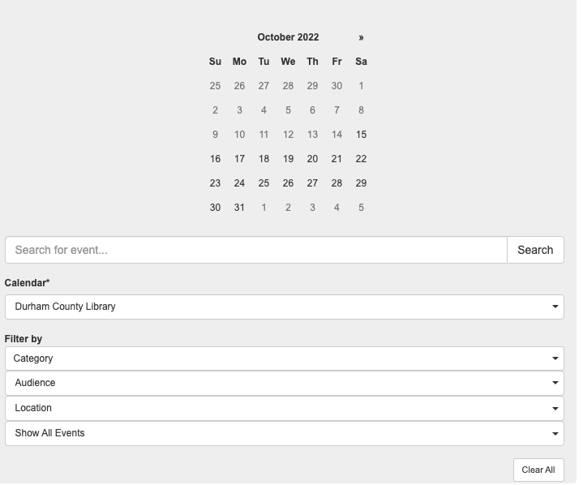

The Durham County Library website houses a lot of information, a lot of which is presented directly on the homepage, making for a somewhat overwhelming user experience. Users are greeted instantly with upwards of five notifications on the top of the page which follow you as you navigate the site, covering about a quarter of the visible screen. There is only one static image other than flyers or book covers, despite the library being expansive, gorgeous, and having a lot of features that could be used as main photos. The menu is well organized; there are only a few encompassing options as well as section for the most common tasks that make it easy to find what you are looking for.
The placement of features on the home page are quite familiar and user-friendly. The very top of the page features links for your library account, hours and locations, an ask feature, and the option to view the page in Spanish. The secondary navigation bar offers a direct link back to the home page, a link to an event page, a drop-down menu for programs and services, books and media, and online resources. The search is the most prominent features being the only button and only colorful link. The display also shows the hours of the branches; however, you are only able to see a few locations before having to scroll. If you keep scrolling down the page, you also see the “common tasks” and featured events on the sidebar. The sidebar is expansive and extends beyond the content area, leaving a large blank space on the main page if you continue to scroll.
There are many different aspects of the Durham County Library that can seem overwhelming without the help of the intuitive navigation system. The navigation bar offers users the ability to navigate all aspects of the site without necessarily needing to utilize the search bar. Most, however, not all secondary screens contain the same navigation bar(s), though for those that do not the only way to get back to the home screen or a screen with a navigation bar is to use the back button. There are a few options that seem redundant and appear in multiple categories, most glaringly the two search features on the home page right next to each other. One may think that one would be for searching the catalog and the other the site itself, however, they are both only to search the catalog. It is helpful (if you want to search the catalog) that this feature follows the users from page to page, however, it would be heaps more helpful if the search bar located on the navigation bar would be for navigating the site itself. 
The library offers a lot of different opportunities for community members to engage within the library and the site functions as a sort of hub for users to find events and utilize library resources. While they do promote the searching of their catalog, they primarily highlight their events and resources: getting business support, utilizing technology, taking classes (from meditation to line dancing), joining a book club, and of course, getting reading recommendations. With such a broad scope of activities and resources, organizing the information in a logical manner is of utmost importance.
Durham County is a very diverse community with a variety of needs. The library site works to engage the people and offer them a place of stability, community, and resources for improving or maintaining their knowledge and involvement with where they live. The event calendar is expansive and with multiple events happening nearly every day, something for everyone. Events can be organized by interest, audience, or date, so it is easy for users to find something that may interest them and add to their own electronic calendars by widgets.  With so much happenings at the library, a clean and clear site is vital for users to be able to engage fully with the site's resources and the physical library, which I believe it just barely falls short. What is nice, however, is that they offer the opportunity for users to offer website feedback.